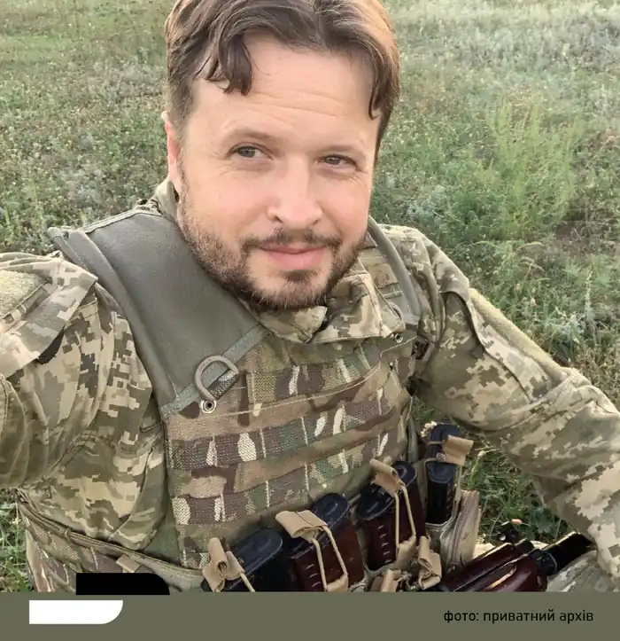

Богдан Вікторович Коломійчук — український письменник, автор історико-авантюрних, історичних та детективних романів.
Народився 1984 року. 2006 року закінчив фізичний факультет Львівського національного університету імені Івана Франка.
2013 року видав дебютний історико-авантюрний роман "Людвисар. Ігри вельмож", що отримав Гран-прі конкурсу "Коронація слова 2013". 2014 року світ побачила збірка детективних оповідань "Таємниця Єви". 2015 року у видавництві "Фоліо" вийшли одразу дві книжки — "В'язниця душ" та "Небо над Віднем" (серія "Ретророман"), 2016-го — "Візит доктора Фройда". У 2017 році у видавництві "Фоліо" було видано продовження роману "Людвисар. Ігри вельмож" — "Король болю". 2018 року у "Видавництві Старого Лева" вийшла книжка "Моцарт із Лемберга", присвячена синові Вольфганга Амадея Моцарта, Францу Ксаверу. 2019 року у "Видавництві Старого Лева" вийшов детективний роман "Готель "Велика Пруссія"". 24 лютого 2022 року, почувши новину про вторгнення росіян, Богдан вирішив приєднатися до ЗСУ добровольцем, щоб захистити свій дім та рідних. Богдану було присвоєне звання молодшого сержанта. Літературну діяльність письменник поставив на паузу. Після місяців на фронті, він нарешті зміг побачити рідних у жовтні і на кілька днів "побути письменником", а потім знову повернувся на передову в якості бойового медика.